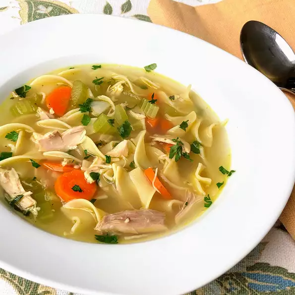

Chicken Noodle Soup

Don't have time to make a homemade version of chicken noodle soup? Try this one and you won't regret it!
- 1 (3 1/2) pound chicken, cut into 8 pieces
- 4 (16 ounce) cans low-sodium chicken broth
- 2 carrots, peeled and thinly sliced
- 2 stalks celery, sliced
- ½ cup chopped onion
- 1 (8 ounce) package dried egg noodles
- ½ cup finely chopped fresh parsley
- 1 tablespoon freshly squeezed lemon juice
- salt and ground black pepper to taste
- Combine chicken and chicken broth in a large, heavy pot over medium-high heat; bring to a boil. Reduce heat, cover partially, and simmer until chicken is no longer pink at the bone and the juices run clear, about 20 minutes. An instant-read thermometer inserted near the bone should read 165 degrees F (74 degrees C). Remove chicken with tongs and transfer to a large bowl. Allow chicken and broth to cool slightly.
- Remove skin and bones from cooled chicken and discard. Cut chicken meat into bite-sized pieces. Skim fat off the top of the cooled broth and discard.
- Return chicken broth to a simmer. Add carrots, celery, and onion to the broth and simmer until vegetables soften, about 8 minutes. Stir in chicken, egg noodles, parsley, and lemon juice and simmer until noodles are tender, about 5 minutes. Season with salt and pepper.